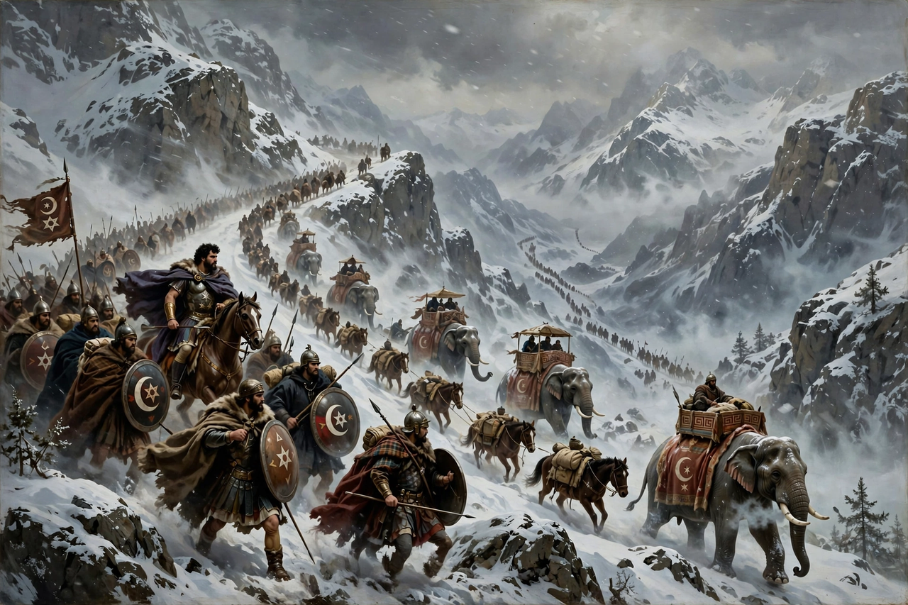

Hannibal

Hannibal's army and elephants crossing the snowbound Alps, as imagined in a dramatic historical painting
Hannibal Barca (247 – c. 183 BC) was a Carthaginian general, the son of Hamilcar Barca, and one of the most celebrated commanders in history. Sworn, by his own account, to eternal enmity toward Rome, he led the Carthaginian invasion of Italy in the Second Punic War: crossing the Alps with war elephants in 218 BC, he won annihilating victories at Trebia, Lake Trasimene and Cannae, and campaigned in Italy for fifteen years without losing a major battle there. Recalled to Africa, he was defeated by Scipio Africanus at Zama in 202 BC, and died in exile rather than be surrendered to Rome.
The march on Italy
As commander in Iberia, Hannibal's capture of Saguntum (219 BC) triggered war with Rome. In 218 BC he marched some 90,000 infantry, 12,000 cavalry and 37 elephants from Spain through Gaul and over the Alps — a five-month feat of logistics in which perhaps half his army perished — descending into Italy to raise Rome's Italian allies in revolt. At Cannae (216 BC) his double envelopment destroyed a Roman army of some 70,000 men, a tactical masterpiece still studied in staff colleges.
Defeat and exile
Yet Rome refused terms, avoided pitched battle, and ground down Hannibal's position; his brother Hasdrubal's relief army was destroyed at the Metaurus (207 BC). Recalled in 203 BC, Hannibal met Scipio at Zama, where his elephants were neutralised and his army broken. As a statesman he reformed Carthage's finances, then fled Roman demands into exile at the courts of Antiochus III and Prusias of Bithynia, taking poison, tradition says, around 183 BC rather than be handed over.